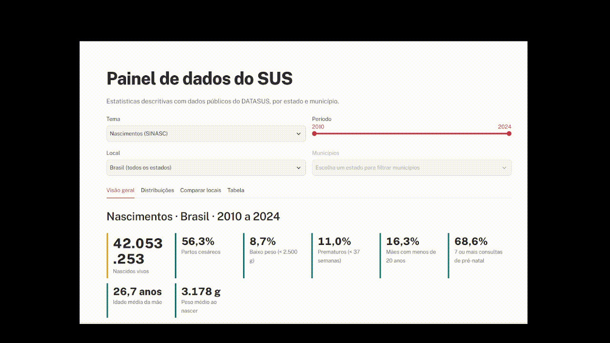
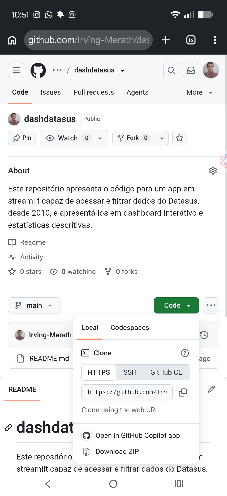
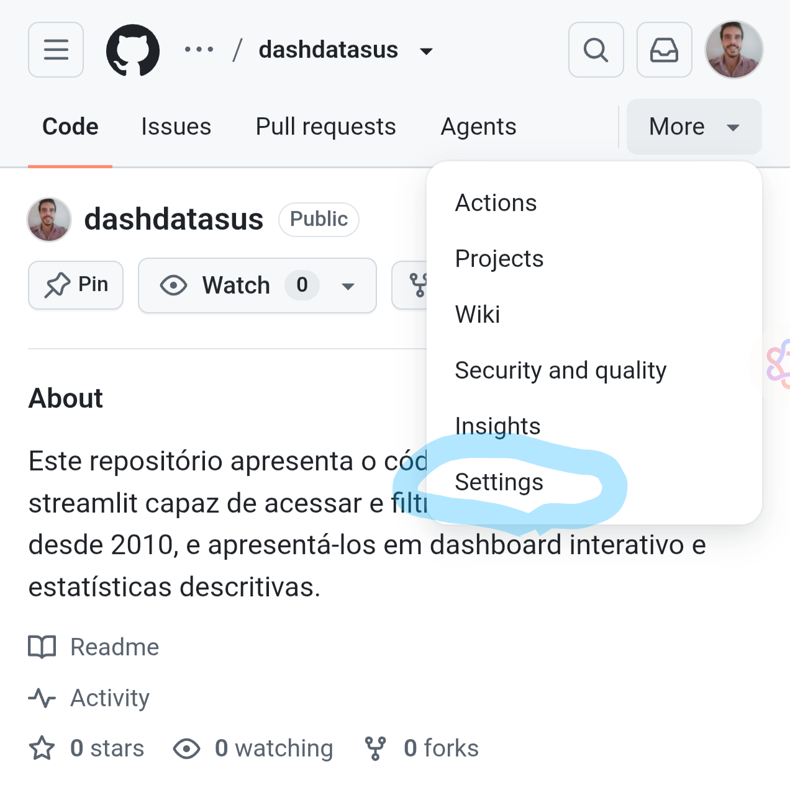
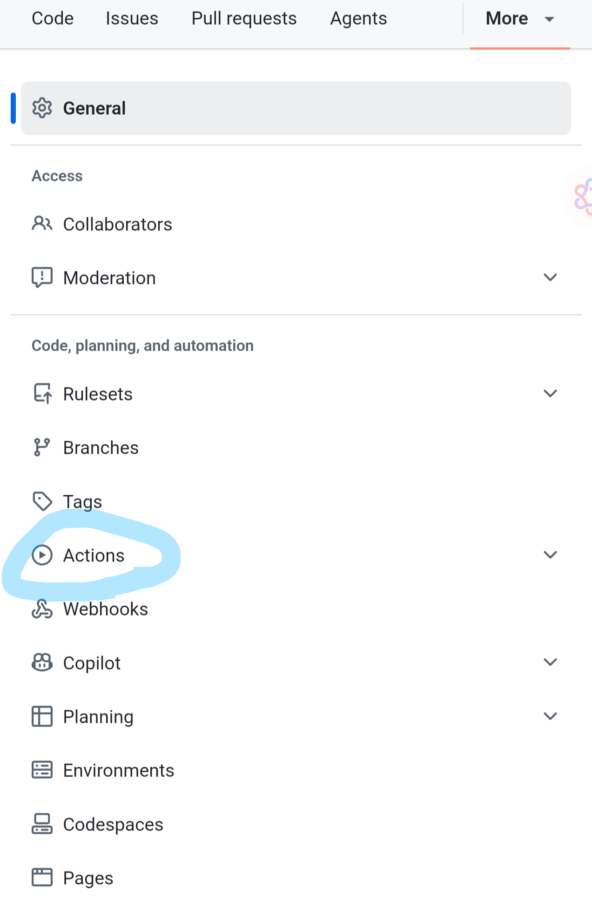
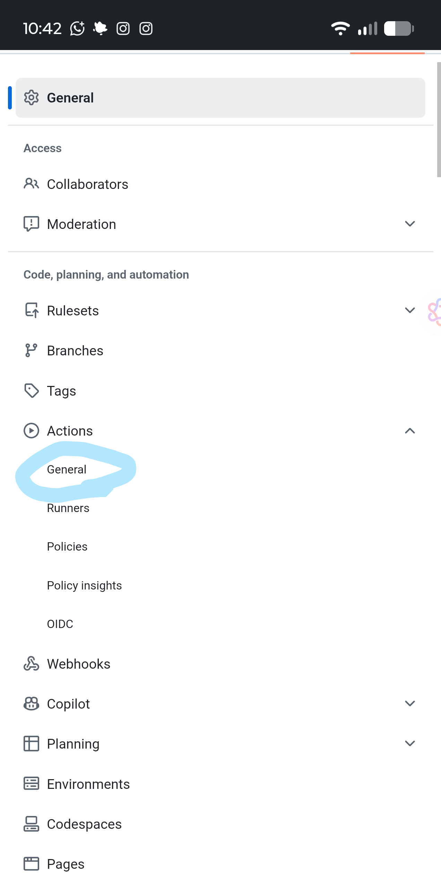
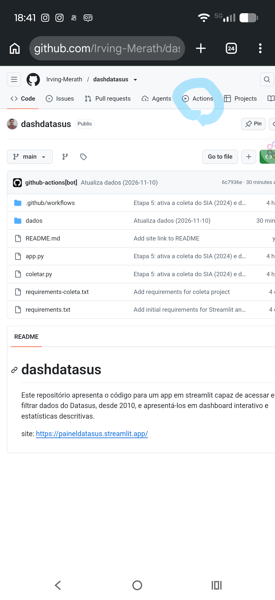
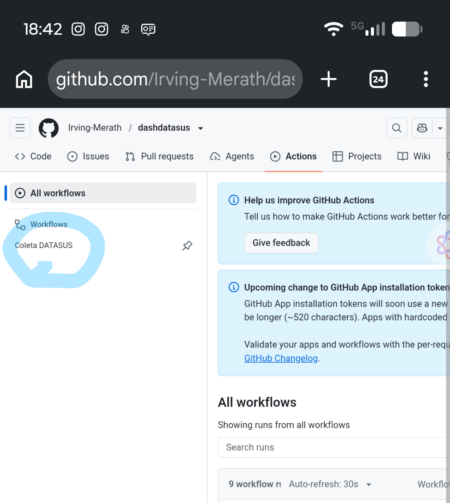
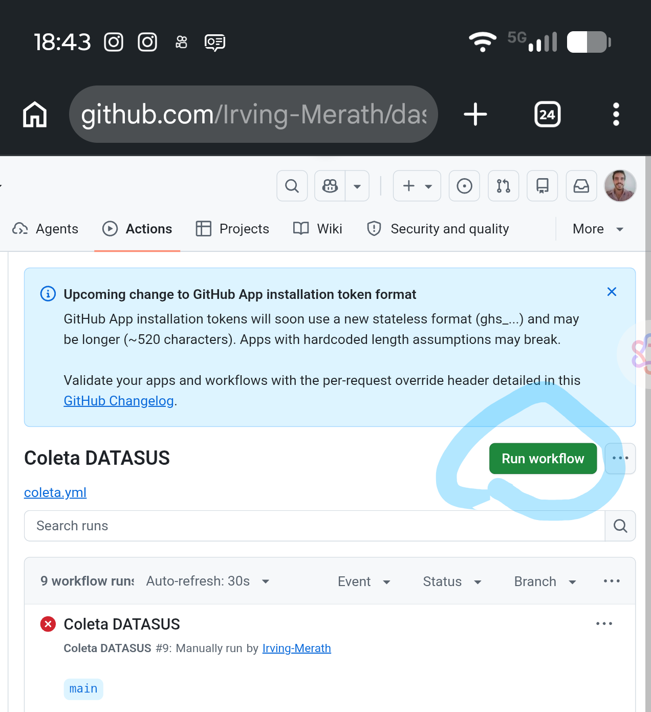
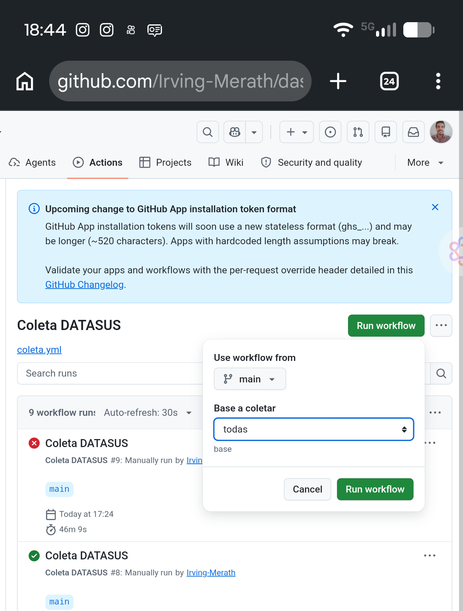
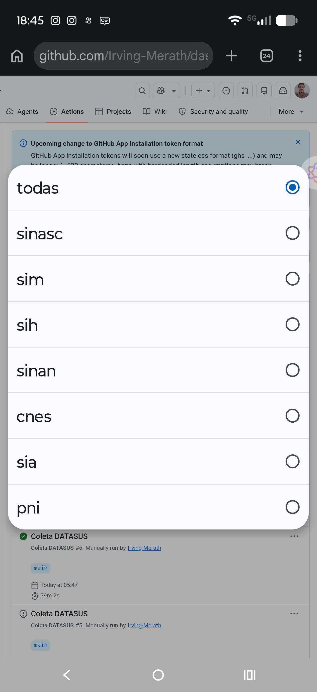

Fundamentos de IA para Criar Software
Da pergunta pioneira de Alan Turing à criação de produtos em linguagem natural.
A Pergunta Histórica
"Máquinas podem pensar?"
Em 1950, Alan Turing propôs abandonar debates filosóficos insolúveis sobre consciência e focar no comportamento observável com o Jogo da Imitação.
Do Jogo da Imitação ao Aprendizado
O Teste de Turing
Avaliação às cegas por mensagens escritas.
A Máquina-Criança
Um mecanismo simples educado por experiência.
A Grande Virada
Aprender sem programação rígida de cada passo.
O Que é Machine Learning?
"O campo de estudos que dá aos computadores a habilidade de aprender sem serem explicitamente programados para isso."
— Arthur Samuel (1959)
Inteligência Artificial vs. Machine Learning
Inteligência Artificial (IA)
Conceito guarda-chuva para qualquer tarefa executada autonomamente por um computador, seja via regras pré-codificadas ou modelos.
"Se X, faça Y."
Machine Learning (ML)
Subcampo probabilístico onde o sistema analisa dados para inferir padrões estatísticos e realizar tarefas sem regras fixas.
"Se X tiver a maior probabilidade do conjunto, faça Y."
Programação Tradicional vs. Machine Learning
Antes: O Humano Escrevia a Regra
Para cada cenário novo, o programador tinha de prever e codificar a exceção.
Agora: Os Dados Revelam a Regra
Você fornece os dados de entrada e exemplos do resultado desejado. O computador descobre o modelo.
Machine Learning no Dia a Dia
Classificador de Spam
A sua caixa de e-mail aprende com as mensagens que você marca como "importante" ou "spam". Ela detecta termos e remetentes semelhantes automaticamente.
iFood: "A Regra do Gin"
Narrado no livro O Cientista e o Executivo: compras de garrafas caras de gin em restaurantes na madrugada tinham altíssima correlação com cartões clonados.
Padrão oculto identificado pelos dadosModelos Discriminativos vs. Modelos Generativos
Modelos Discriminativos
Calculam a fronteira de decisão entre classes conhecidas. Atuam como auditores e inspetores.
"Isto é um cão ou um gato?"
Modelos Generativos
Aprendem a distribuição geral dos dados para produzir novos itens do zero.
"Desenhe um gato inédito para mim."
Categorias de Aprendizado de Máquina
Supervisionado vs. Não-Supervisionado (Clustering)
1. Aprendizado Supervisionado (Com Rótulos)
Classificação Exata2. Aprendizado Não-Supervisionado (Clustering)
Agrupamento AutônomoReforço, Semi e Auto-Supervisionado
Por Reforço
Aprender por tentativa e erro: ações certas ganham pontos (recompensa); ações erradas são penalizadas. Usado em games e robótica.
Semi-Supervisionado
Combina pouquíssimos dados anotados manualmente por especialistas com um grande volume de dados brutos não classificados.
Auto-Supervisionado
O próprio texto gera o gabarito. O modelo oculta a próxima palavra da sentença e aprende prevendo o que deve vir a seguir.
O Que São Large Language Models (LLMs)?
Tokens em vez de Sentimentos
Computadores não "leem" significados ou emoções. Textos são convertidos em vetores matemáticos (tokens) com pesos estatísticos.
Cálculo da Próxima Palavra
Dada uma sentença de entrada, a LLM calcula a palavra com maior probabilidade estatística:
Como os Programadores Trabalham
Antes: O Desespero do StackOverflow
Horas preso na documentação caçando erros de digitação e vírgulas.
Hoje: Arquiteto com IA (Vibecoding)
Comunicação em linguagem natural e supervisão arquitetural.
A Lógica por Trás da Conversa
Pensamento Estruturado
A IA não adivinha desejos confusos. Quem sabe decompor problemas em etapas lógicas extrai resultados dez vezes mais precisos.
Condições e Fluxos
Compreender regras condicionais (se... então; para cada item...) é o que separa um prompt genérico de uma solução de software real.
Auditoria Crítica
Modelos probabilísticos podem alucinar. Ter discernimento lógico é o que permite identificar e consertar inconsistências no código.
Oficina Prática: Vibecoding
Vamos construir e publicar um dashboard analítico interativo conversando com a IA.
Atue como um engenheiro de software especialista em Python e Streamlit. Crie um aplicativo interativo de dashboard para análise de dados do DATASUS (nascimentos SINASC de 2010 a 2024). Inclua filtros por tema, período e município, além de cards com métricas principais (nascidos vivos, cesáreas, baixo peso) e gráficos analíticos.
Escaneie o QR Code para Acessar as Especificações
Aponte a câmera do seu celular para abrir o documento com as especificações e fontes de dados do projeto.
Como o Painel vai Ficar (Painel de Dados do SUS)

Acessar o Repositório no GitHub e Clicar em Code
1. Acesse o repositório do projeto
Entre no repositório dashdatasus pelo GitHub no navegador.
2. Clique no botão verde "Code"
Abra as opções para copiar o endereço de clonagem ou descarregar o projeto.

Acessar as Configurações do Repositório (Settings)
1. Abra o menu adicional
No topo do repositório, clique na opção More ou no ícone de opções.
2. Selecione "Settings"
Acesse as configurações de administração e automação do projeto.

Configurar Automações: Navegar até Actions
1. Menu Lateral Esquerdo
Localize a seção Code, planning, and automation.
2. Clique em "Actions"
Aqui configuramos os robôs de atualização automática de dados.

Acessar o Submenu General de Actions
1. Expanda a Seção Actions
No menu lateral esquerdo sob a categoria Actions.
2. Clique em "General"
Abra as permissões globais de execução para os fluxos de trabalho.

Habilitar Read and Write Permissions & Salvar
1. Workflow permissions
Marque a opção Read and write permissions para que os robôs consigam atualizar dados.
2. Clique em "Save"
Confirme a alteração para que o repositório fique pronto para o deploy.
Carregando Workflows: Executando os Robôs de Coleta


Disparando o Robô (Run Workflow)


Selecionando as Bases e Publicando no Streamlit
Bases Disponíveis do DATASUS
Escolha entre coletar todas ou bases pontuais: sinasc, sim, sih, sinan, cnes, sia ou pni.
Deploy no Streamlit Community Cloud
Acesse share.streamlit.io, conecte seu GitHub, selecione o repositório dashdatasus e clique em Deploy!

Irving Merath
"Conecte-se comigo e vamos construir o próximo projeto juntos!"